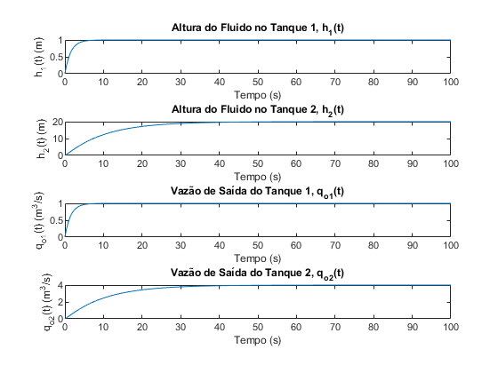

Laboratório de Sistemas Dinâicos
Prática 08 28/07/2024 Autores: Victor Hugo Daia Lorenzato e Whilker Henrique Santos Silva
Contents
Limpar workspcade
close all;
clear;
clc;
Ex 01 A
syms A R s G1 = 1 / (A * s + 1 / R); G2 = 1 / (A * R * s + 1); [num, den] = numden(G1); fprintf (" %s \n" + ... "------\n" + ... "%s\n\n\n" ,num,den); [num, den] = numden(G2); fprintf (" %s \n" + ... "------\n" + ... "%s\n" ,num,den);
R ------ A*R*s + 1 1 ------ A*R*s + 1
Ex 01 B
A = 2; R = 10; s = tf('s'); G1 = 1 / (A * s + 1 / R); G2 = 1 / (A * R * s + 1); t = 0:0.1:100; Q_i = ones(size(t)); H = lsim(G1, Q_i, t); Q_o = lsim(G2, Q_i, t); figure; subplot(2,1,1); plot(t, H); title('Altura do Fluido h(t)'); xlabel('Tempo (s)'); ylabel('h(t) (m)'); subplot(2,1,2); plot(t, Q_o); title('Vazão de Saída Q_o(t)'); xlabel('Tempo (s)'); ylabel('Q_o(t) (m^3/s)');
Quando aplica-se uma entrada constante de 1m³/s a altura de fluido do tanque 1, inicialmente aumenta rapidamente. Isso ocorre porque o tanque está recebendo um fluxo contínuo de entrada. À medida que o tempo passa, a taxa de aumento da altura do fluido no tanque atinge um valor constante. Isso se dá pelo equilíbrio alcançado entre entrada e saída através da válvula.
Ex 01 C
Se a área do tanque aumenta, a constante A na função de transferência aumenta.
Isso implica que o sistema terá uma resposta mais lenta, já que o termo no denominador da função de transferência aumentará, reduzindo a velocidade de resposta do sistema.
Ex 01 D
Para um sistema estável, a altura do fluido tende a se estabilizar. Logo, a vazão de saída tenderá a se igualar à vazão de entrada.
Ex 01 E
A = 2; R = 10; s = tf('s'); G1 = 1 / (A * s + 1 / R); G2 = 1 / (A * R * s + 1); figure; bode(G1); title('Diagrama de Bode de G1(s)'); figure; bode(G2); title('Diagrama de Bode de G2(s)');
Ex 01 F
A = 2; R = 10; A_matrix = [-1/(A*R)]; B_matrix = [1/A]; C_matrix = [1/R]; D_matrix = [0]; sys = ss(A_matrix, B_matrix, C_matrix, D_matrix); disp('Sistema de espaço de estados:'); disp(sys); t = 0:0.1:100; Q_i = ones(size(t)); [y, t, x] = lsim(sys, Q_i, t); figure; subplot(2,1,1); plot(t, x); title('Resposta do Estado h(t)'); xlabel('Tempo (s)'); ylabel('h(t) (m)'); subplot(2,1,2); plot(t, y); title('Resposta da Saída Q_o(t)'); xlabel('Tempo (s)'); ylabel('Q_o(t) (m^3/s)');
Sistema de espaço de estados:
ss with properties:
A: -0.0500
B: 0.5000
C: 0.1000
D: 0
E: []
Offsets: []
Scaled: 0
StateName: {''}
StatePath: {''}
StateUnit: {''}
InternalDelay: [0×1 double]
InputDelay: 0
OutputDelay: 0
InputName: {''}
InputUnit: {''}
InputGroup: [1×1 struct]
OutputName: {''}
OutputUnit: {''}
OutputGroup: [1×1 struct]
Notes: [0×1 string]
UserData: []
Name: ''
Ts: 0
TimeUnit: 'seconds'
SamplingGrid: [1×1 struct]
Ex 02 A
C1 = 1.5;
C2 = 2;
R1 = 1;
R2 = 5;
A = [-1/(C1*R1) 0; 1/(C2*R1) -1/(C2*R2)];
B = [1/C1 0; 0 1/C2];
C = [1 0; 0 1; 1/R1 0; 0 1/R2];
D = [0 0; 0 0; 0 0; 0 0];
sys = ss(A, B, C, D);
disp('Sistema de espaço de estados:');
disp(sys);
Sistema de espaço de estados:
4×2 ss array with properties:
A: [2×2 double]
B: [2×2 double]
C: [4×2 double]
D: [4×2 double]
E: []
Offsets: []
Scaled: 0
StateName: {2×1 cell}
StatePath: {2×1 cell}
StateUnit: {2×1 cell}
InternalDelay: [0×1 double]
InputDelay: [2×1 double]
OutputDelay: [4×1 double]
InputName: {2×1 cell}
InputUnit: {2×1 cell}
InputGroup: [1×1 struct]
OutputName: {4×1 cell}
OutputUnit: {4×1 cell}
OutputGroup: [1×1 struct]
Notes: [0×1 string]
UserData: []
Name: ''
Ts: 0
TimeUnit: 'seconds'
SamplingGrid: [1×1 struct]
Ex 02 B
t = 0:0.1:100; q_i1 = ones(size(t)); q_i2 = 3 * ones(size(t)); u = [q_i1' q_i2']; [y, t, x] = lsim(sys, u, t); figure; subplot(4,1,1); plot(t, y(:,1)); title('Altura do Fluido no Tanque 1, h_1(t)'); xlabel('Tempo (s)'); ylabel('h_1(t) (m)'); subplot(4,1,2); plot(t, y(:,2)); title('Altura do Fluido no Tanque 2, h_2(t)'); xlabel('Tempo (s)'); ylabel('h_2(t) (m)'); subplot(4,1,3); plot(t, y(:,3)); title('Vazão de Saída do Tanque 1, q_{o1}(t)'); xlabel('Tempo (s)'); ylabel('q_{o1}(t) (m^3/s)'); subplot(4,1,4); plot(t, y(:,4)); title('Vazão de Saída do Tanque 2, q_{o2}(t)'); xlabel('Tempo (s)'); ylabel('q_{o2}(t) (m^3/s)');
Ex 02 C
[num1, den1] = ss2tf(A, B, C, D, 1); G11 = tf(num1(1,:), den1); G21 = tf(num1(2,:), den1); [num2, den2] = ss2tf(A, B, C, D, 2); G12 = tf(num2(1,:), den2); G22 = tf(num2(2,:), den2); disp('Função de Transferência G11(s):'); G11 disp('Função de Transferência G12(s):'); G12 disp('Função de Transferência G21(s):'); G21 disp('Função de Transferência G22(s):'); G22
Função de Transferência G11(s):
G11 =
0.6667 s + 0.06667
------------------------
s^2 + 0.7667 s + 0.06667
Continuous-time transfer function.
Função de Transferência G12(s):
G12 =
0
Continuous-time transfer function.
Função de Transferência G21(s):
G21 =
0.3333
------------------------
s^2 + 0.7667 s + 0.06667
Continuous-time transfer function.
Função de Transferência G22(s):
G22 =
0.5 s + 0.3333
------------------------
s^2 + 0.7667 s + 0.06667
Continuous-time transfer function.
Ex 02 D
[num1, den1] = ss2tf(A, B, C, D, 1); H1_1 = tf(num1(1,:), den1); H1_2 = tf(num1(2,:), den1); [num2, den2] = ss2tf(A, B, C, D, 2); H2_1 = tf(num2(1,:), den2); H2_2 = tf(num2(2,:), den2); disp('Função de Transferência H1(s):'); H1_1 H1_2 disp('Função de Transferência H2(s):'); H2_1 H2_2
Função de Transferência H1(s):
H1_1 =
0.6667 s + 0.06667
------------------------
s^2 + 0.7667 s + 0.06667
Continuous-time transfer function.
H1_2 =
0.3333
------------------------
s^2 + 0.7667 s + 0.06667
Continuous-time transfer function.
Função de Transferência H2(s):
H2_1 =
0
Continuous-time transfer function.
H2_2 =
0.5 s + 0.3333
------------------------
s^2 + 0.7667 s + 0.06667
Continuous-time transfer function.